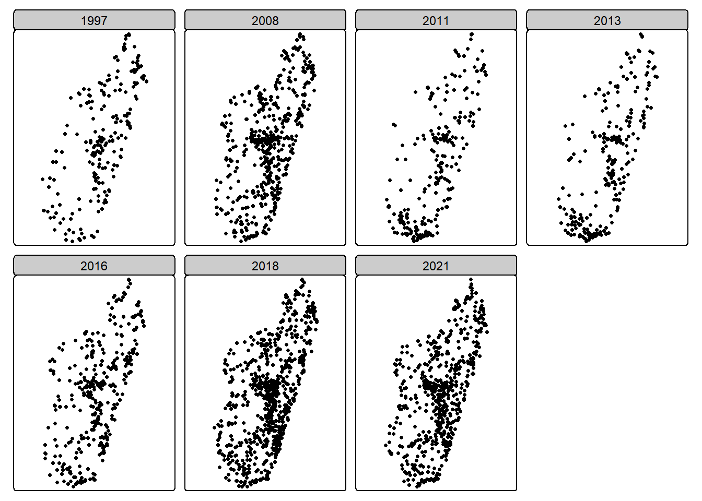
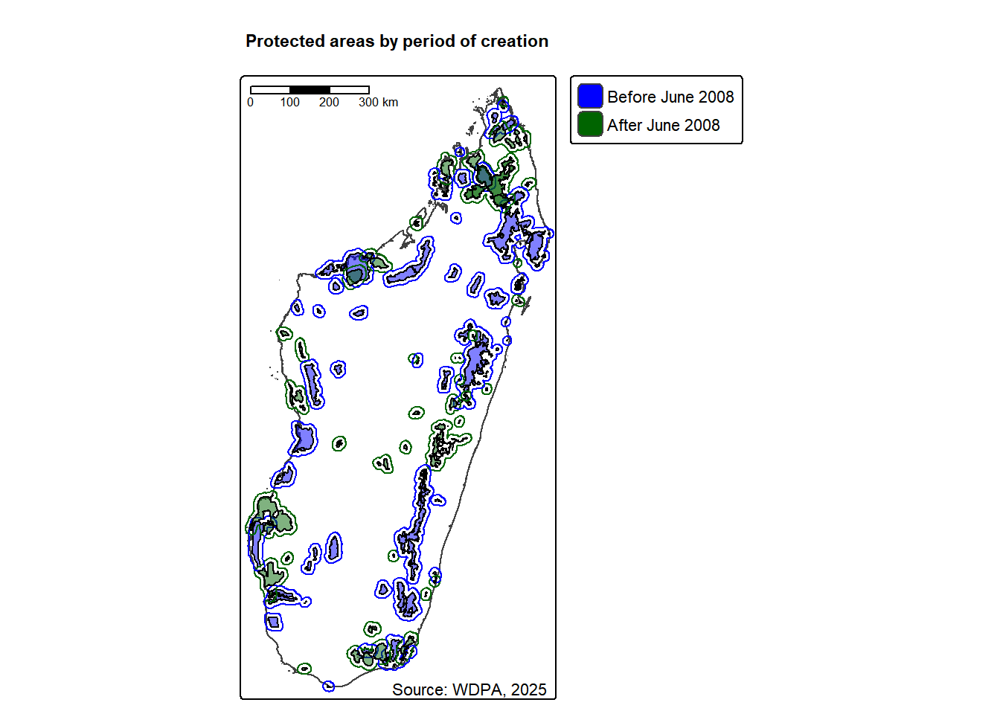

Les clusters d’enquêtes DHS (1997, 2008 et 2021), MIS (2011, 2013, 2016) et MICS (2018) sont classés par rapport à leur distance aux aires protégées (AP) et à leur localisation en zone rurale ou urbaine. Le résultat attendu est le suivant :
Groupe de traitement: Ménages localisées dans les clusters à moins de 10 km des AP créées à partir de 2008 dans les zones rurales
Groupe de contrôle: Ménages localisées dans les clusters à plus de 10 km des AP créées à partir de 2008 dans les zones rurales
Groupe à exclure: Ménages localisées dans les clusters à moins de 10 km des AP créées avant 2008 et dans la zone urbaine
2.1 Chargement des coordonnées GPS des clusters d’enquête
On charge les coordonnées GPS des enquêtes de 1997, 2008, 2011, 2013, 2016, 2018 et 2021, qui sont en WGS 84 (codé EPSG : 4326). NToutefois, uniquement pour le calcul des surfaces ou des distances, on va utiliser le système de projection officiel de Madagascar, qui est le Laborde (EPSG : 29702).
Code
library(tidyverse) #Manipulation et visualisation des donnéeslibrary(haven) # Importer et exporter des données issues de Stata, SPSS ou SASlibrary(sf) #Analyse des données spatialeslibrary(tmap) #Analyse cartographiquelibrary(gt) #Mise en forme des tableaux library(gtExtras) # Extra styling des tableauxlibrary(geodata) # Pour avoir le contour de Madagascarlibrary(writexl) # Pour faire une sortie sous Excellibrary(units) # Unités de mesure pour les vecteurs Rlibrary(leaflet) # Pour faire une cartographie interactivelibrary(readxl) # Lecture des fichiers excellibrary(webshot2) # Pour faire des captures d'écran de tableaux gt library(dplyr)library(terra)library(tidyterra)library(progressr)#library(rstac)library(httr)library(wdpar)library(tmap)library(pbapply)# Systèmes de coordonnées de référence standard_crs <-4326mdg_crs <-29702# On charge les donnéesgps_1997_initial <-st_read("data/raw/dhs/DHS_1997/MDGE32FL/MDGE32FL.shp", quiet =TRUE)gps_2008_initial <-st_read("data/raw/dhs/DHS_2008/MDGE53FL/MDGE53FL.shp", quiet =TRUE) gps_2011_initial <-st_read("data/raw/dhs/DHS_2011/MDGE61FL/MDGE61FL.shp", quiet =TRUE) gps_2013_initial <-st_read("data/raw/dhs/DHS_2013/MDGE6AFL/MDGE6AFL.shp", quiet =TRUE) gps_2016_initial <-st_read("data/raw/dhs/DHS_2016/MDGE71FL/MDGE71FL.shp", quiet =TRUE)gps_2021_initial <-st_read("data/raw/dhs/DHS_2021/MDGE81FL/MDGE81FL.shp", quiet =TRUE)gps_2018_initial <-st_read("data/raw/mics/2018/GPS Datasets/MadagascarMICS2018GPS.shp") %>%select(DHSYEAR = SVYYEARS,DHSCLUST = HH1,URBAN_RURA = HH6,LATNUM = LATITUDE,LONGNUM = LONGITUDE) %>%mutate(URBAN_RURA =case_when( URBAN_RURA =="Urban"~"U", URBAN_RURA =="Rural"~"R",.default =NA_character_ ))
Reading layer `MadagascarMICS2018GPS' from data source
`C:\Users\fbede\Documents\Statistiques\PA-livelihood-impact-dhs_v2\data\raw\mics\2018\GPS Datasets\MadagascarMICS2018GPS.shp'
using driver `ESRI Shapefile'
Simple feature collection with 774 features and 18 fields
Geometry type: POINT
Dimension: XY
Bounding box: xmin: 43.36162 ymin: -25.52768 xmax: 50.27895 ymax: -12.28119
Geodetic CRS: WGS 84
Une fois les données chargées, on fusionne les trois jeux de données en un seul puis visualisés sur une carte.
Figure 1: DHS, MIS and MICS survey cluster locations
Nous obtenons une carte distincte pour chaque année d’enquête. Sur chaque carte figure des points, dans laquelle chaque point représente un cluster d’enquête, correspondant aux coordonnées GPS fournies par DHS.
2.2 Vérification des données gps des clusters
On vérifie que les coordonnées GPS sont bien dans le pays.
Code
# Contour national (GADM level 0), réutilisé dans tout le documentcontour_mada <- geodata::gadm(country ="Madagascar", level =0,path ="data/raw/gadm") |>st_as_sf()# Fonction qui vérifie que les coordonnées ne sont pas nullescheck_coordinates <-function(dhs_gps, country_polygon, negate =FALSE) { dhs_gps %>%filter(LONGNUM !=0| LATNUM !=0)}gps_1997 <-check_coordinates(gps_1997_initial, contour_mada)gps_2008 <-check_coordinates(gps_2008_initial, contour_mada)gps_2011 <-check_coordinates(gps_2011_initial, contour_mada)gps_2013 <-check_coordinates(gps_2013_initial, contour_mada)gps_2016 <-check_coordinates(gps_2016_initial, contour_mada)gps_2018 <-check_coordinates(gps_2018_initial, contour_mada)gps_2021 <-check_coordinates(gps_2021_initial, contour_mada)
Les coordonnées GPS de neuf clusters de l’enquête 2008 présentent des coordonnées GPS invalides (0,0). Un cluster de l’année 1997 et 2011 présente également des coordonnées GPS invalides.
Code
#| fig-cap: DHS, MIS and MICS survey cluster locations after correctiontmap_mode("plot")bind_rows(gps_1997, gps_2008, gps_2011, gps_2013, gps_2016, gps_2018, gps_2021) %>%tm_shape() +tm_dots() +tm_facets("DHSYEAR")

2.3 Une base actualisée des limites des aires protégées
La base dynamic_wdpa.gpkg est le produit consolidé du travail intitulé « Dynamic conservation boundaries » (Bédécarrats et al. 2026), dont le code source est archivé sur GitHub et les données publiées sur un dépôt de données scientifique. Elle répond à plusieurs limite structurelle du World Database on Protected Areas (WDPA), qui ne conserve que l’état actuel de chaque site : à chaque modification (redécoupage, reclassement, dégazage, protection temporaire), la configuration antérieure est écrasée, ce qui rend impossibles les analyses rétrospectives et biaise les évaluations d’impact qui assimilent les limites actuelles à celles en vigueur par le passé. En outre les chercheurs utilisent couramment le champ STATUS_YR comme la date de création des aires protégées, mais ce n’est pas toujours le cas, car cette date est réinitialisée à chaque changement de statut ou de dénomination d’une aire protégée. Pour remédier à ces faille, la base dynamic_wdpa.gpkg documente 123 aires protégées terrestres de Madagascar de 2000 à 2025 sous forme d’états temporels bornés dans le temps : chaque ligne représente une zone dans un état donné, avec sa période de validité (valid_from/valid_to), sa géométrie (WGS84), et ses attributs (WDPAID, nom, désignation, catégorie UICN, statut, autorité de gestion), chaque état étant rattaché à une source juridique (registre d’amendements YAML consolidé par un moteur déterministe en R). Les zones sont typées par le champ zone_type : external_boundary (limite externe de l’AP), core_zone (noyau dur où l’usage extractif est prohibé), internal_buffer_zone et external_buffer_zone (zones tampons internes et externes). C’est ce découpage temporel qui permet, dans ce chapitre, de classer chaque cluster d’enquête selon la configuration des AP en vigueur à sa date d’enquête (cf. section « Classification des clusters »), et de mener le test de sensibilité « limites fixes vs limites à date ».
2.3.1 États successifs du réseau d’AP malgache aux dates des enquêtes
Ces helpers reconstruisent l’état du réseau d’AP valide à une date donnée en filtrant les états temporels de dynamic_wdpa d’après valid_from/valid_to. Ils sont définis ici une seule fois et réutilisés par la classification des clusters (limites à date) et le test de sensibilité (limites fixes).
Code
# Chargement de la base dynamique (mêmes filtres que data/PA_creation/PA_database.R,# en conservant les champs temporels state_id / valid_from / valid_to)library(terra)dynamic_wdpa_vect <-vect("data/PA_creation/dynamic_wdpa.gpkg") |>filter(MARINE %in%0:1) |>mutate(STATUS_YR_DYN =case_when( WDPAID ==555697871~2015, STATUS =="Proposed"~2026,TRUE~as.integer(STATUS_YR) ),WDPAID =as.integer(WDPAID) ) |>filter(DESIG !="Ramsar Site, Wetland of International Importance") |>filter(STATUS !="Inscribed") |>select(WDPAID, NAME, DESIG, MANG_AUTH, IUCN_CAT, STATUS, STATUS_YR_DYN, zone_type, state_id, valid_from, valid_to)dynamic_wdpa_metadata <- readr::read_csv("data/PA_creation/wdpa_data/dynamic_wdpa_metadata.csv",show_col_types =FALSE)
Code
survey_years <-c(1997, 2008, 2011, 2013, 2016, 2018, 2021)last_wave <-max(survey_years)# États des limites externes, avec les métadonnées par AP (jeu d'analyse,# hors AP "Proposed")pa_states_analysis <-st_as_sf(dynamic_wdpa_vect) |>mutate(valid_from =as.Date(valid_from), valid_to =as.Date(valid_to)) |># Correction robuste de WDPAID 555697871 (Ambohimirahavavy Marivorahona,# créé en 2015) : la base dynamique lui attribuait un valid_from# placeholder 0000-01-01. Si la base amont est corrigée, la condition# est fausse et ce correctif devient un no-op.mutate(valid_from =if_else(WDPAID ==555697871& valid_from <as.Date("2015-01-01"),as.Date("2015-01-01"), valid_from)) |>filter(zone_type =="external_boundary") |>st_make_valid() |>left_join(dynamic_wdpa_metadata |>select(-STATUS), by ="WDPAID") |>filter(is.na(STATUS) | STATUS !="Proposed") |>select(WDPAID, STATUS, STATUS_YR, IUCN_CAT = IUCN_CAT.y, valid_from, valid_to, geometry) |>arrange(WDPAID, valid_from)# Hypothèse des limites fixes (issue U2 #2) : dernier état de limite connu# par AP, appliqué rétroactivement à toutes les vagues. Utilisée uniquement# pour le test de sensibilité.pa_states_fixed <- pa_states_analysis |>group_by(WDPAID) |>slice_tail(n =1) |>ungroup()# Fonction générique (destinée à conservation-dynamic-madagascar) : réseau d'AP# en vigueur à une date de référence de `year`. La date de référence coupe# l'année en deux : les enquêtes DHS/MICS s'étalent sur plusieurs mois, le# 1er juin approche mieux la date moyenne d'interview que le 31 décembre,# qui post-date la collecte de presque toute l'année.#' Get the PA network in force at a reference date#'#' Filters consolidated PA states to those valid at the reference date of a#' given year: states whose validity started on or before the cut-off date and#' have not ended by then (open-ended states are always kept). The cut-off#' date is expressed as "DD/MM" (day/month) and defaults to "01/06"#' (June 1st), which better approximates the average DHS/MICS interview date#' than December 31st.#'#' @param states Consolidated PA states (output from consolidate_pa_states)#' @param year Reference year#' @param cutoff_date Cut-off date within the year, as "DD/MM" (default "01/06")#' @return sf object with the states valid at the reference dateget_pa_network <-function(states, year, cutoff_date ="01/06") { md <-as.integer(strsplit(cutoff_date, "/")[[1]]) ref_date <-as.Date(sprintf("%d-%02d-%02d", year, md[2], md[1])) states |>filter(valid_from <= ref_date, is.na(valid_to) | ref_date < valid_to)}# État du réseau d'AP au 1er juin de chaque vague (limites fixes pour le# test de sensibilité : passer pa_states_fixed à get_pa_network()).# AP créées après `year` (mais au plus tard à la dernière vague) :# limite en vigueur à leur créationpa_states_future <-function(year, fixed =FALSE) { pool <-if (fixed) pa_states_fixed else pa_states_analysis pool |>filter(STATUS_YR > year, STATUS_YR <= last_wave) |>group_by(WDPAID) |>slice_min(valid_from, n =1, with_ties =FALSE) |>ungroup()}# Application aux vagues d'enquête : une couche du réseau par date, avec# la géométrie en vigueur au 1er juin de chaque année (y compris 1997,# qui reprend désormais son propre état et non plus celui de 2008).# Classification stricte (IUCN I-IV) vs multi-usage (IUCN V-VI) : définition# partagée avec 07-estimation_staggered.qmd (cf. utils/iucn_sets.R)source("utils/iucn_sets.R")dynamic_wdpa_vect_yearly <- purrr::map(survey_years, function(y) {get_pa_network(pa_states_analysis, y) |>mutate(pa_type =case_when( IUCN_CAT %in% iucn_sets$strict ~"Strict (IUCN I-IV)", IUCN_CAT %in% iucn_sets$multi ~"Multi-use (IUCN V-VI)",TRUE~"Autre" )) |>mutate(survey_year = y)}) |>bind_rows() |>mutate(survey_year =factor(survey_year, levels = survey_years))# Contour national (adm0) en arrière-plancontour_mada0 <- contour_mada# Vérification : les couches annuelles ne sont pas identiques (évolutions# de limites et entrées/sorties entre vagues successives)purrr::map_dfr(seq_along(survey_years)[-1], function(i) { a <- dynamic_wdpa_vect_yearly |>filter(survey_year == survey_years[i -1]) |>mutate(area_km2 =as.numeric(st_area(geometry)) /1e6) |>st_drop_geometry() |>select(WDPAID, area_a = area_km2) b <- dynamic_wdpa_vect_yearly |>filter(survey_year == survey_years[i]) |>mutate(area_km2 =as.numeric(st_area(geometry)) /1e6) |>st_drop_geometry() |>select(WDPAID, area_b = area_km2) m <-merge(a, b, by ="WDPAID", all =TRUE)tibble(vague = survey_years[i],n_AP =nrow(b),nouvelles =sum(is.na(m$area_a) &!is.na(m$area_b)),sorties =sum(!is.na(m$area_a) &is.na(m$area_b)),limites_modifiees =sum(abs(m$area_b - m$area_a) >0.01, na.rm =TRUE) )})
tab_pa <- dynamic_wdpa_vect_yearly |>mutate(area_km2 =as.numeric(st_area(geometry)) /1e6) |>st_drop_geometry() |>group_by(survey_year, pa_type) |>summarise(n =n(), area =sum(area_km2), .groups ="drop") |> tidyr::pivot_wider(names_from = pa_type, values_from =c(n, area),values_fill =0)names(tab_pa) <-c("survey_year", "n_strict", "n_multi", "a_strict", "a_multi")tab_pa |>mutate(n_total = n_strict + n_multi,a_total = a_strict + a_multi) |>select(survey_year, n_strict, a_strict, n_multi, a_multi, n_total, a_total) |>gt() |>tab_header(title =md("**État du réseau d'aires protégées aux dates d'enquête**"),subtitle =md("*AP strictes (IUCN I-IV) et multi-usages (IUCN V-VI) — état au 1er juin de chaque année*") ) |>tab_spanner(label ="Strictes (IUCN I-IV)", columns =c(n_strict, a_strict)) |>tab_spanner(label ="Multi-usages (IUCN V-VI)", columns =c(n_multi, a_multi)) |>tab_spanner(label ="Total", columns =c(n_total, a_total)) |>cols_label(survey_year ="Vague",n_strict ="N",a_strict ="km²",n_multi ="N",a_multi ="km²",n_total ="N",a_total ="km²" ) |>fmt_number(columns =c(a_strict, a_multi, a_total), decimals =0) |>fmt_number(columns =c(n_strict, n_multi, n_total), decimals =0,use_seps =FALSE) |>tab_footnote("Nombre d'AP et superficie du réseau valide au 1er juin de l'année d'enquête.",locations =cells_column_labels(columns = survey_year) ) |>tab_options(table.width =pct(100))
Table 2.1
État du réseau d’aires protégées aux dates d’enquête
AP strictes (IUCN I-IV) et multi-usages (IUCN V-VI) — état au 1er juin de chaque année
Vague1
Strictes (IUCN I-IV)
Multi-usages (IUCN V-VI)
Total
N
km²
N
km²
N
km²
1997
40
15,142
0
0
40
15,142
2008
49
24,989
15
15,794
64
40,782
2011
52
25,994
51
33,357
103
59,351
2013
52
26,005
51
33,357
103
59,362
2016
53
34,437
58
36,109
111
70,546
2018
54
35,540
60
36,207
114
71,747
2021
54
35,540
62
36,485
116
72,025
1 Nombre d'AP et superficie du réseau valide au 1er juin de l'année d'enquête.
2.4 Création de buffer pour les AP avant et après 2008
On travaille toujours avec les portions terrestres des AP.
Pour analyser l’impact des AP selon leur période de création, on spécifie, pour chaque vague d’enquête, les AP en vigueur à sa date (issues de dynamic_wdpa_vect_yearly) créées avant 2008 et à partir de 2008, d’après leur année de création (STATUS_YR). On applique ensuite un buffer zone de 10 km autour de chaque groupe d’AP. Chaque groupe a été reprojeté dans le système de projection officiel de Madagascar, qui est le Laborde (EPSG : 29702) pour les calculs de distances. Nous créons ensuite une carte pour visualiser les AP et leurs zones d’influence, en prenant la vague 2008 comme exemple ; les buffers sont ensuite construits pour toutes les vagues. Exception : pour l’enquête 1997, utilisée comme test de placebo, on applique l’état du réseau d’AP de 2008 (et donc les buffers de 2008).
Code
# Buffer de 10 kmbuffer_dist <-10000# Fonction de création du buffer de 10 km (reprojection Laborde pour les# calculs de distance, union des AP, puis retour en WGS 84). Définie une# seule fois ici et réutilisée par la classification des clusters.buffer_10km <-function(pa, buffer_dist =10000) {if (nrow(pa) ==0) return(st_as_sf(st_sfc(st_polygon(), crs = standard_crs))) pa |>st_transform(mdg_crs) |>st_buffer(dist = buffer_dist) |>st_make_valid() |>st_union() |>st_as_sf() |>st_make_valid() |>st_transform(standard_crs)}# Buffers annuels : pour chaque vague d'enquête, on part de l'état du réseau# d'AP en vigueur à sa date (dynamic_wdpa_vect_yearly) et on sépare les AP# selon leur année de création (STATUS_YR) : avant 2008 vs à partir de 2008.yearly_pa_buffers <- purrr::map(survey_years, function(y) { net <- dynamic_wdpa_vect_yearly |>filter(survey_year == y)list(before_2008 =buffer_10km(net |>filter(STATUS_YR <2008)),from_2008 =buffer_10km(net |>filter(STATUS_YR >=2008)) )}) |>set_names(as.character(survey_years))# Exception 1997 : cette vague sert de test de placebo, on lui applique l'état# du réseau d'AP de 2008 (et donc les buffers calculés pour 2008).yearly_pa_buffers[["1997"]] <- yearly_pa_buffers[["2008"]]# Exemple 2008 : couches et buffers utilisés pour les cartes ci-dessous.# À la date de l'enquête 2008, aucune AP créée à partir de 2008 n'est encore# en vigueur (wdpa_from_2008 vide) : on la remplace par une géométrie vide# pour que tmap puisse tracer la couche.pad_empty <-function(x) {if (nrow(x) ==0) {st_as_sf(st_sfc(st_polygon(), crs =st_crs(x))) } else x}wdpa_2008 <- dynamic_wdpa_vect_yearly |>filter(survey_year ==2008)wdpa_before_2008 <- wdpa_2008 |>filter(STATUS_YR <2008) |>pad_empty()wdpa_from_2008 <- wdpa_2008 |>filter(STATUS_YR >=2008) |>pad_empty()buffer_10km_before_2008 <- yearly_pa_buffers[["2008"]]$before_2008buffer_10km_from_2008 <- yearly_pa_buffers[["2008"]]$from_2008# Visualisation des cartes tmap_mode("plot")tm_shape(contour_mada) +tm_borders() +tm_shape(wdpa_before_2008) +tm_polygons(fill ="blue", col ="black", fill_alpha =0.5) +tm_shape(buffer_10km_from_2008) +tm_borders(col ="darkgreen", lwd =1, fill.legend =tm_legend_hide()) +tm_shape(buffer_10km_before_2008) +tm_borders(col ="blue", lwd =1, fill.legend =tm_legend_hide()) +tm_shape(wdpa_from_2008) +tm_polygons(fill ="darkgreen", col ="black", fill_alpha =0.5) +tm_add_legend(type ="polygons", fill =c("blue", "darkgreen"), labels =c("Before June 2008", "After June 2008")) +tm_title("Protected areas by period of creation", fontface ="bold", size =1) +tm_credits("Source: WDPA, 2025", position =c("BOTTOM", "RIGHT")) +tm_scalebar(position =c("TOP", "LEFT"))

Figure 5: Protected areas by period of creation
On agrège les données pour chaque groupe, en calculant le nombre total d’aires protégées et leur superficie totale, que l’on présente sous forme de tableau.
Code
library(gt)pivot_year <-2008# Année de création : premier STATUS_YR connu de chaque AP (le STATUS_YR est# réinitialisé à chaque changement de statut, on retient l'état initial).# Superficie : dernier état de limite connu (pa_states_fixed, hors AP# "Proposed"), base dynamic_wdpa.pa_crea <- pa_states_analysis |>group_by(WDPAID) |>slice_min(valid_from, n =1, with_ties =FALSE) |>ungroup() |>st_drop_geometry() |>select(WDPAID, STATUS_YR)pa_area <- pa_states_fixed |>mutate(area_km2 =as.numeric(st_area(geometry)) /1e6) |>st_drop_geometry() |>select(WDPAID, area_km2)summary_table <- pa_crea |>left_join(pa_area, by ="WDPAID") |>mutate(Creation_Period =if_else( STATUS_YR < pivot_year,paste("Before June", pivot_year),paste("After June", pivot_year) )) |>group_by(Creation_Period) |>summarise(Count =n(),Area_km2 =sum(area_km2, na.rm =TRUE),.groups ="drop" )gt_table <- summary_table |>gt() |>tab_header(title =md("**Protected Areas by Period of Creation**"),subtitle =md(paste0("*Madagascar — Reference year: ", pivot_year," — Terrestrial areas only*")) ) |>cols_label(Creation_Period =md("**Creation Period**"),Count =md("**PA Number**"),Area_km2 =md("**Area (km²)**") ) |>fmt_number(columns = Count, decimals =0, use_seps =TRUE) |>fmt_number(columns = Area_km2, decimals =2, use_seps =TRUE) |>cols_align(align ="left", columns = Creation_Period) |>cols_align(align ="right", columns =c(Count, Area_km2)) |>cols_width( Creation_Period ~px(180), Count ~px(120), Area_km2 ~px(150) ) |>tab_style(style =cell_fill(color ="#e8f5e9"),locations =cells_body(rows =seq(2, nrow(summary_table), 2)) ) |>tab_style(style =list(cell_fill(color ="darkgreen"),cell_text(color ="white", weight ="bold", size =px(13)) ),locations =cells_column_labels() ) |>tab_style(style =cell_text(size =px(18), weight ="bold", color ="darkgreen"),locations =cells_title(groups ="title") ) |>tab_style(style =cell_text(size =px(13), color ="grey40", style ="italic"),locations =cells_title(groups ="subtitle") ) |>grand_summary_rows(columns =c(Count, Area_km2),fns =list(Total =~sum(.)),fmt =~fmt_number(., decimals =0, use_seps =TRUE) ) |>tab_style(style =list(cell_fill(color ="darkgreen"),cell_text(color ="white", weight ="bold") ),locations =cells_grand_summary() ) |>tab_footnote(footnote =md("PA = Protected Area as defined by IUCN categories I–VI. Creation year: first STATUS_YR known per PA (dynamic WDPA base); area: latest known boundary."),locations =cells_column_labels(columns = Count) ) |>tab_source_note(md("**Source:** Dynamic conservation boundaries (WDPA-derived), 2025.")) |>tab_source_note(md("**Note:** Analysis restricted to terrestrial protected areas in Madagascar; AP « Proposed » excluded.")) |>tab_options(table.font.names ="Times New Roman",table.font.size =px(13),table.width =pct(85),heading.align ="left",heading.border.bottom.color ="darkgreen",heading.border.bottom.width =px(2),column_labels.border.top.color ="darkgreen",column_labels.border.top.width =px(2),column_labels.border.bottom.color ="darkgreen",column_labels.border.bottom.width =px(2),column_labels.padding =px(8),table_body.hlines.color ="#cccccc",table_body.hlines.width =px(0.5),table_body.border.bottom.color ="darkgreen",table_body.border.bottom.width =px(2),data_row.padding =px(8),source_notes.font.size =px(10),source_notes.border.lr.style ="none",source_notes.padding =px(6),footnotes.font.size =px(10),footnotes.marks ="letters" )write_rds(gt_table, "paper/tables/tbl-period-crea.rds")gtsave(gt_table, "paper/tables/tbl-period-crea.png", expand =10, zoom =3)gt_table
Table 2.2
Protected Areas by Period of Creation
Madagascar — Reference year: 2008 — Terrestrial areas only
Creation Period
PA Numbera
After June 2008
54
Before June 2008
64
Total
—
118
a PA = Protected Area as defined by IUCN categories I–VI. Creation year: first STATUS_YR known per PA (dynamic WDPA base); area: latest known boundary.
Note: Analysis restricted to terrestrial protected areas in Madagascar; AP « Proposed » excluded.
Le tableau ci-dessus récapitule, sur l’ensemble de la période d’étude (1997–2021), le nombre et la superficie des AP selon leur période de création (les AP encore au statut “Proposed” en sont exclues).
2.5 Classification des clusters
Les grappes d’enquête sont classées selon leur proximité aux AP créées avant 2008 et à partir de 2008. A l’aide de la fonction classify_clusters(), nous catégorisons chaque cluster en trois groupes: traitement, contrôle ou exclu, selon leur localisation par rapport aux AP et leur statut urbain ou rural. Cette classification est appliquée aux clusters de 1997, 2008, 2011, 2013, 2016, 2018 et 2021. Parmi les clusters considérés comme “traités”, on identifie l’année de création de l’AP, son type et le numéro WDPAID ou l’identifiant unique de l’AP en question. Les résultats obtenus sont fusionnés. Nous créons ensuite une carte par année d’étude pour visualiser la localisation des AP et la répartition spatiale des clusters selon leur groupe.
Les limites des AP ayant évolué au cours du temps (le fichier dynamic_wdpa.gpkg documente chaque état des limites avec ses périodes de validité valid_from/valid_to), la classification est désormais faite par vague d’enquête : pour chaque année à partir de 2008, on utilise l’état du réseau d’AP valide à la date de l’enquête (1er juin de l’année d’enquête — la collecte s’étalant sur plusieurs mois, cette date coupe l’année en deux et approche la date moyenne d’interview), et non les limites actuelles. La vague 1997 fait exception : elle sert de vague placebo (comparaison 1997–2008), on lui applique donc l’état du réseau d’AP de 2008, de sorte que sa sélection de clusters est identique à celle de 2008 (mêmes unités, toutes pré-traitement). Pour les AP créées après une vague donnée (mais avant la dernière vague), c’est la limite en vigueur à leur création qui sert à identifier les clusters qui seront traités (“Before treatment”) ; le statut de traitement effectif reste déterminé par STATUS_YR.
Les AP encore au statut “Proposed” (jamais officialisées pendant la période d’étude) sont exclues du jeu d’analyse : les clusters proches de ces AP sont classés Control, conformément au pré-analyse plan (aucune restriction n’existait pendant les enquêtes).
Code
# Helpers réutilisables définis plus haut : pa_states_analysis, pa_states_fixed,# get_pa_network(), pa_states_future(), buffer_10km() — état du réseau d'AP à une# date donnée.pa_buffered <-function(pa, buffer_dist =10000) { pa |>select(WDPAID, STATUS_YR, IUCN_CAT, geometry) |>mutate(pa_geom = geometry) |>st_transform(mdg_crs) |>mutate(geometry =st_buffer(geometry, buffer_dist)) |>st_transform(standard_crs)}classify_clusters_with_pa <-function(cluster_gps, year, fixed =FALSE,buffer_dist =10000) {# 1997 sert de vague placebo (comparaison 1997-2008) : on y applique l'état# du réseau d'AP de 2008, afin que la sélection des clusters soit identique# à celle de 2008 (mêmes unités, toutes pré-traitement en 1997). year_net <-max(year, 2008) net <-get_pa_network(if (fixed) pa_states_fixed else pa_states_analysis, year_net ) pa_before_y <- net |>filter(STATUS_YR <2008) pa_after_y <- net |>filter(STATUS_YR >=2008, STATUS_YR <= year_net) pa_future_y <-pa_states_future(year_net, fixed) buffer_before <-buffer_10km(pa_before_y, buffer_dist) buffer_after <-buffer_10km(pa_after_y, buffer_dist) buffer_future <-buffer_10km(pa_future_y, buffer_dist) in_before <-st_within(cluster_gps, buffer_before, sparse =FALSE)[, 1] in_after <-st_within(cluster_gps, buffer_after, sparse =FALSE)[, 1] in_future <-st_within(cluster_gps, buffer_future, sparse =FALSE)[, 1] base <- cluster_gps |>mutate(groupe =case_when( (in_after | in_future) &!in_before & URBAN_RURA =="R"~"Treatment", in_before | URBAN_RURA =="U"~"Excluded",TRUE~"Control" ))# enrich treated with the oldest+nearest PA (existing at wave date first) treated_pts <- base |>filter(groupe =="Treatment")if (nrow(treated_pts) ==0) return(base) cand_pa <-pa_buffered(bind_rows(pa_after_y, pa_future_y), buffer_dist) cand <-st_join(treated_pts, cand_pa, join = st_within, left =FALSE) |>mutate(dist_km =as.numeric(st_distance(geometry, pa_geom, by_element =TRUE)) /1000) best <- cand |>group_by(DHSCLUST) |>slice_min(STATUS_YR, with_ties =TRUE) |>slice_min(dist_km, with_ties =FALSE) |>ungroup() |>st_drop_geometry() |>select(DHSYEAR, DHSCLUST, WDPAID, STATUS_YR, IUCN_CAT, dist_km) base |>left_join(best, by =c("DHSYEAR", "DHSCLUST"))}gps_all_class <-bind_rows( purrr::map(survey_years, function(y) {classify_clusters_with_pa(get(paste0("gps_", y)), y) }))
2.5.1 Tests : la sélection des clusters reflète-t-elle l’état du réseau d’AP à chaque date d’enquête ?
Code
# WDPAIDs des AP "Proposed" (exclues du jeu d'analyse)prop_ids <- dynamic_wdpa_metadata |>filter(STATUS =="Proposed") |>pull(WDPAID)test_results <- purrr::map_dfr(survey_years, function(y) { d_y <- gps_all_class |>filter(DHSYEAR == y)# même année de réseau que dans classify_clusters_with_pa (placebo 1997) y_net <-max(y, 2008) net <-get_pa_network(pa_states_analysis, y_net) buf_after <-buffer_10km(net |>filter(STATUS_YR >=2008, STATUS_YR <= y_net)) buf_before <-buffer_10km(net |>filter(STATUS_YR <2008)) buf_future <-buffer_10km(pa_states_future(y_net)) in_after <-st_within(d_y, buf_after, sparse =FALSE)[, 1] in_before <-st_within(d_y, buf_before, sparse =FALSE)[, 1] in_future <-st_within(d_y, buf_future, sparse =FALSE)[, 1] rural <- d_y$URBAN_RURA =="R"tibble(DHSYEAR = y,n_clusters =nrow(d_y),# T1 : les AP "Proposed" ne génèrent jamais de traitementt1_treated_proposed =sum(d_y$groupe =="Treatment"& d_y$WDPAID %in% prop_ids),# T2 : un cluster rural dans le buffer d'une AP existant à la date de# l'enquête n'est jamais Controlt2_control_in_existing =sum(d_y$groupe =="Control"& rural & in_after),# T3 : aucun cluster n'est Treatment via le buffer des AP antérieures à 2008t3_treated_in_pre2008 =sum(d_y$groupe =="Treatment"& in_before),# T4 : tout cluster traité est dans le buffer d'une AP post-2008# (existante à la date d'enquête ou à venir)t4_treated_outside =sum(d_y$groupe =="Treatment"&!(in_after | in_future)),# T5 : "Already treated" implique une AP existant à la date d'enquêtet5_prev_inconsistent =sum(d_y$groupe =="Treatment"&!is.na(d_y$STATUS_YR) & d_y$STATUS_YR <= d_y$DHSYEAR &!in_after) )})# Tous les compteurs de violation doivent être nulsstopifnot("T1-T5 : la classification viole la cohérence temporelle du réseau d'AP"=all(unlist(test_results |>select(starts_with("t")))) ==0)test_results
Tous les tests passent pour les sept vagues : aucune AP “Proposed” ne génère de traitement (T1), aucun cluster rural à moins de 10 km d’une AP existant à la date de l’enquête n’est classé Control (T2), aucun cluster traité ne l’est via les AP antérieures à 2008 (T3) ou en dehors des buffers post-2008 (T4), et tout cluster “Already treated” est bien dans le buffer d’une AP existant à la date d’enquête (T5).
2.5.2 Test de sensibilité : limites fixes vs limites à date
La classification principale repose sur les limites en vigueur à chaque date d’enquête. À titre de sensibilité, on compare avec la classification utilisant les limites fixes (dernier état connu de chaque AP, appliqué rétroactivement à toutes les vagues) :
Nous produisons un tableau récapitulatif du nombre de grappes d’enquête classées dans chaque groupe pour les années 1997, 2008, 2011, 2013, 2016, 2018 et 2021. Afin de faciliter le comptage et la transformation en tableau, nous supprimons les données spatiales pour ne conserver que les informations attributaires (année d’enquête “DHSYEAR” et groupe de classification “groupe”).
Code
# Sous-catégories pour le groupe "Traitement" (dépend de DHSYEAR vs STATUS_YR)treated_sub_clusters <- gps_all_class %>%st_drop_geometry() %>%filter(groupe =="Treatment") %>%mutate(subcat =case_when(!is.na(STATUS_YR) & DHSYEAR < STATUS_YR ~"Before treatment",!is.na(STATUS_YR) & DHSYEAR >= STATUS_YR ~"Already treated",TRUE~NA_character_ )) %>%count(DHSYEAR, subcat, name ="n_clusters") %>%pivot_wider(names_from = subcat, values_from = n_clusters, values_fill =0)# Ligne "Ensemble" (tous les traités, quel que soit le statut)treated_all_clusters <- gps_all_class %>%st_drop_geometry() %>%filter(groupe =="Treatment") %>%count(DHSYEAR, name ="All_clusters")# Colonnes Contrôles / Exclusctrl_excl_clusters <- gps_all_class %>%st_drop_geometry() %>%filter(groupe %in%c("Control", "Excluded")) %>%mutate(Groupe =recode(groupe, Control ="Controls",Excluded ="Excluded")) %>%count(DHSYEAR, Groupe, name ="n") %>%pivot_wider(names_from = Groupe, values_from = n, values_fill =0)# Assemblage large (années en lignes)tab_wide_clusters <-list(treated_sub_clusters, treated_all_clusters, ctrl_excl_clusters) %>%Reduce(function(x, y) full_join(x, y, by ="DHSYEAR"), .) %>%arrange(DHSYEAR) %>%mutate(across(-DHSYEAR, ~replace_na(.x, 0L)))# Tableau gt : spanner "Traitement" + colonnes Contrôles / Exclusgt_table_clusters <- tab_wide_clusters %>%rename(Year = DHSYEAR) %>%gt() %>%tab_header(title ="Number of Clusters by Survey Year and Group") %>%cols_label(`Before treatment`="Before treatment",`Already treated`="Already treated",All_clusters ="All clusters",`Controls`="Controls",`Excluded`="Excluded" ) %>%tab_spanner(label ="Treatment",columns =c(`Before treatment`, `Already treated`, All_clusters) ) %>%fmt_number(columns =c(`Before treatment`, `Already treated`, All_clusters, `Controls`, `Excluded`),decimals =0,use_seps =TRUE ) %>%cols_align(align ="center", columns =everything()) %>%tab_footnote(footnote =md("**Before treatment** : DHSYEAR < STATUS_YR (PA are not yet created). **Already treated** : DHSYEAR ≥ STATUS_YR. **All clusters** : total number of clusters*Treatment*."),locations =cells_title(groups ="title") )gt_table_clusters
Number of Clusters by Survey Year and Group1
Year
Treatment
Controls
Excluded
Before treatment
Already treated
All clusters
1997
3
0
3
117
148
2008
10
0
10
351
224
2011
1
14
15
152
99
2013
1
22
23
143
108
2016
0
19
19
229
110
2018
1
41
42
417
315
2021
0
48
48
342
260
1Before treatment : DHSYEAR < STATUS_YR (PA are not yet created). Already treated : DHSYEAR ≥ STATUS_YR. All clusters : total number of clustersTreatment.
Maintenant avec le nombre de ménages :
Code
# Function to read DHS data for the specified year and identifierload_dhs_data <-function(dhs_folder, year, identifier) { folder_pattern <-paste0(".*", year, ".*", identifier) matching_folder <-list.dirs(dhs_folder, full.names =TRUE, recursive =TRUE) %>%keep(~str_detect(.x, folder_pattern))if (length(matching_folder) ==0) {stop("No folder found for the specified year and identifier.") }if (identifier =="GE") { file_pattern <-"\\.shp$" data_loader <-function(file) st_read(file, quiet =TRUE) } else { file_pattern <-"\\.[Dd][Tt][Aa]$" data_loader <- read_dta } target_file <-list.files(matching_folder, pattern = file_pattern, full.names =TRUE)if (length(target_file) ==0) {stop("No valid file found in the folder.") } data <-data_loader(target_file)return(data)}dhs_folder <-"data/raw/dhs"# Années disponiblesyears_all <-sort(unique(gps_all_class$DHSYEAR))# Compte ménages (toutes observations) households_counts_all <-map_dfr(years_all, function(y) {# Load data depending on yearif (y ==2018) { hr <-read_spss("data/raw/mics/2018/SPSS datasets/hh.sav") %>%transmute(hv001 = HH1,hv002 = HH2,DHSYEAR = y ) } else {# HR de l'année hr <-load_dhs_data(dhs_folder, y, "HR") %>%mutate(DHSYEAR = y) %>%select(hv001, hv002, DHSYEAR) }# Classification des grappes de l'année cl_y <- gps_all_class %>%st_drop_geometry() %>%filter(DHSYEAR == y) %>%select(DHSYEAR, DHSCLUST, groupe, STATUS_YR)# Jointure ménages <- classification (par cluster hv001) hr_cl <- hr %>%select(DHSYEAR, hv001) %>%left_join(cl_y, by =c("DHSYEAR"="DHSYEAR", "hv001"="DHSCLUST"))# Comptes par sous-catégories du traitement (DHSYEAR vs STATUS_YR) avant <- hr_cl %>%filter(groupe =="Treatment", !is.na(STATUS_YR), DHSYEAR < STATUS_YR) %>%nrow() deja <- hr_cl %>%filter(groupe =="Treatment", !is.na(STATUS_YR), DHSYEAR >= STATUS_YR) %>%nrow() ens <- hr_cl %>%filter(groupe =="Treatment") %>%nrow() ctrl <- hr_cl %>%filter(groupe =="Control") %>%nrow() excl <- hr_cl %>%filter(groupe =="Excluded") %>%nrow()tibble(DHSYEAR = y,`Avant traitement`= avant,`Déjà traités`= deja,Ensemble = ens,`Contrôles`= ctrl,`Exclus`= excl )})# Tableau gt (ménages, toutes observations)gt_table_menages_all <- households_counts_all %>%rename(Year = DHSYEAR) %>%gt() %>%tab_header(title ="Number of households by survey year and group") %>%cols_label(`Avant traitement`="Before treatment",`Déjà traités`="Already treated",Ensemble ="All clusters",`Contrôles`="Controls",`Exclus`="Excluded" ) %>%tab_spanner(label ="Treatment (PAs created after mid-2008)",columns =c(`Avant traitement`, `Déjà traités`, Ensemble) ) %>%fmt_number(columns =c(`Avant traitement`, `Déjà traités`, Ensemble, `Contrôles`, `Exclus`),decimals =0, use_seps =TRUE ) %>%cols_align(align ="center", columns =everything()) %>%tab_footnote(footnote =md("**Before treatment** : DHSYEAR < STATUS_YR (PA not yet created). **Already treated** : DHSYEAR ≥ STATUS_YR. **All clusters** : total number of households in the group *Treatment*. Note that 1997 uses the state of the PA network in 2008 (not 1997), for placebo test."), locations =cells_title(groups ="title"))gt_table_menages_all
Number of households by survey year and group1
Year
Treatment (PAs created after mid-2008)
Controls
Excluded
Before treatment
Already treated
All clusters
1997
82
0
82
3,952
3,122
2008
303
0
303
10,549
6,726
2011
32
409
441
4,617
3,008
2013
32
692
724
4,455
3,395
2016
0
605
605
7,202
3,477
2018
26
1,064
1,090
10,835
8,192
2021
0
1,485
1,485
10,853
8,172
1Before treatment : DHSYEAR < STATUS_YR (PA not yet created). Already treated : DHSYEAR ≥ STATUS_YR. All clusters : total number of households in the group Treatment. Note that 1997 uses the state of the PA network in 2008 (not 1997), for placebo test.
2.6 Enregistrement des variables classifiées
Les informations essentielles sur la classification des grappes d’enquête sont extraites et enregistrées dans un fichier csv en vue d’une utilisation ultérieure. Seules les informations nécessaires à l’identification des grappes et à leur groupe de traitement sont conservées, excluant les données géographiques et les variables non pertinentes.
Code
# Issue U2 #1 : la géométrie doit être retirée avant write_csv, sinon elle est# sérialisée en texte WKT et se propage dans les chapitres suivants.all_class <- gps_all_class %>%st_drop_geometry() %>%select(DHSYEAR, DHSCLUST, DHSREGNA, GROUP = groupe, WDPAID, STATUS_YR, IUCN_CAT, dist_km)write_csv(all_class, "data/derived/cluster_treatment_classification_staggered.csv")write_csv(st_drop_geometry(wdpa_before_2008), "data/derived/wdpa_before_2008.csv")write_csv(st_drop_geometry(wdpa_from_2008), "data/derived/wdpa_from_2008.csv")
Bédécarrats, Florent, Seheno Ramanantsoa, and Ollier D. Andrianambinina. 2026. “A Replicable Temporal Extension of Protected Area Geodata Applied to 123 Sites in Madagascar.”Scientific Data, ahead of print. https://doi.org/10.23708/VN2TWC.